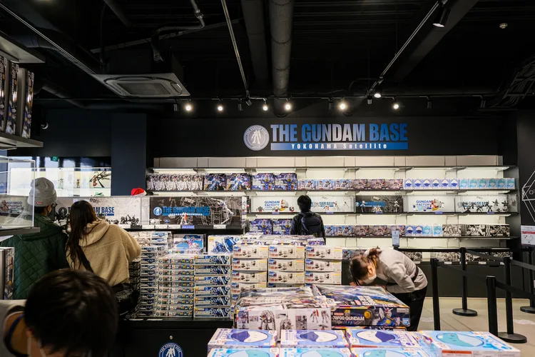
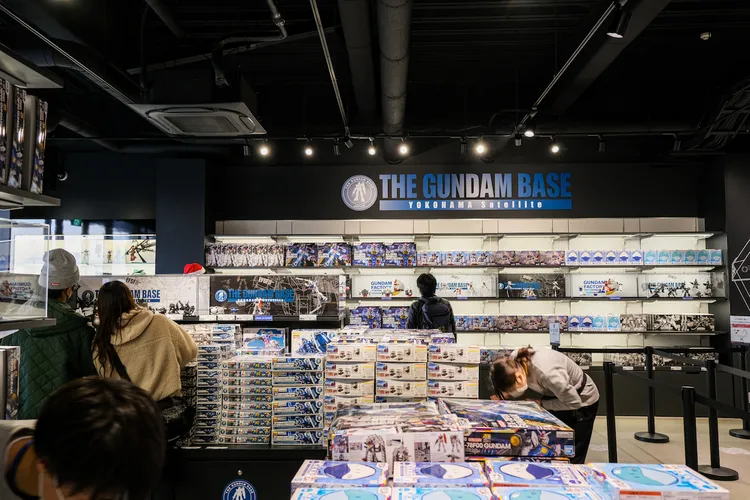

Mô hình Robot Khổng Lồ ở nhật Bản
Khám phá mô hình người máy Gundam khổng lồ có thể di chuyển ra mắt lần đầu tiên tại Nhà máy Gundam Yokohama
Bài viết này đặc biệt dành cho những "fan cứng" của sê-ri phim hoạt hình "Mobile Suit Gundam" (Chiến sĩ cơ động Gundam), với mô hình người máy Gundam có kích thước khổng lồ và có thể di chuyển tại Nhà máy Gundam Yokohama. Chương trình sẽ kéo dài đến cuối tháng 3 tại bến tàu Yamashita ở Yokohama, cách ga Tokyo chỉ một giờ đi tàu.
Robot Gundam được chế tạo để kỷ niệm 40 năm ra đời bộ phim "Mobile Suit Gundam". Toàn bộ quy trình từ khi lập kế hoạch đến khi hoàn thành xây dựng đã mất tới 6 năm liền. Tất nhiên, ở đây không chỉ có buổi trình diễn robot Gundam mà còn có nhiều điểm hấp dẫn khác đang chờ đón bạn.
Địa điểm tham quan tiếp theo là Gundam Base Yokohama Satellite, nơi bạn có thể mua những món quà lưu niệm. Gundam RX-78F00 đang được bán dưới dạng các sản phẩm được thiết kế sáng tạo như mô hình, kính mắt, bìa đựng hồ sơ và đồ ăn vặt. Đây sẽ là những món quà lưu niệm thú vị cho bạn bè của bạn.

Địa điểm tham quan tiếp theo là Gundam Base Yokohama Satellite, nơi bạn có thể mua những món quà lưu niệm. Gundam RX-78F00 đang được bán dưới dạng các sản phẩm được thiết kế sáng tạo như mô hình, kính mắt, bìa đựng hồ sơ và đồ ăn vặt. Đây sẽ là những món quà lưu niệm thú vị cho bạn bè của bạn.

-
về trang web :
trang web nay chuyên về cái bài báo kì lạ trên toàn thế giới cảm ơn bạn đã vào xem -
Liên hệ:
Auther: Phan Vỹ Kiệt.
Code:6251071050.
PhoneNumber:0937824006.
Gmail:phankiet24006@gmail.com